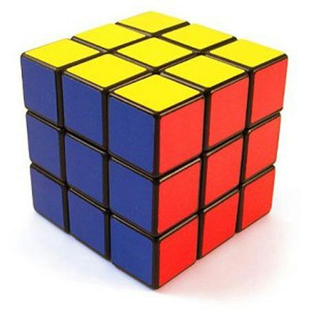

El cubo de Rubik toma su nombre de su creador, el escultor, diseñador
y profesor de arquitectura húngaro Ernő Rubik, nacido el 13 de julio de 1944.
En 1974, Rubik patentó su creación en Hungría y en 1977 se comenzó a comercializar en el país.
Para tener en cuenta que si queres resolver este CUBO debes considerar sus caras
- F = Cara frontal (front)
- U= Nivel superior (up)
- D= Nivel inferior (down)
- R= Cara derecha (right)
- L= Cara izquierda (left)
Mientras te quedas pensando esto, preparate un rico mate
- Ponete el agua a calentar hasta casi alcanzar punto de hervor
- Buscate el paquete de yerba y llena el mate unos 3/4
- LLená el termo con agua
- Mandale la bombilla al matungo
- Agua al matienzo y adeeeeentrooo

No te rindas, como en la vida la solución puede estar a la vuelta de la esquina